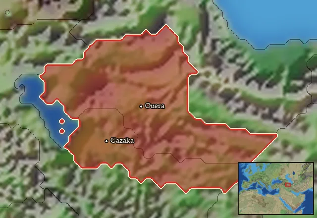

RTR: Imperium Surrectum
RTR: Imperium SurrectumAtropatene


- difficulty Very Difficult
- Iranian culture
- believes
 Iranian
Iranian - 3 settlements
- capital Gazaka
- 8,700 manpower
- 3 characters
- 15 faction units
- 431 regional units
The campaign brief
"The other division is Atropatian Media. It had its name from Atropates, a Hegemon who prevented this land, which is a part of Greater Media, from being subjected to the dominion of the Makedonians. When he was proclaimed king, he established the independence of this land; his successors continue to the present day, and have at different times contracted marriages with the kings of Armenia, Syria, and Parthia." - Strab. 11.13.1
The Medes are like the holy fire: prized, illustrious, and eternal. That the ancient Medes came out of the disastruous troubles borne from that most wretched usurper Sikandar should not be a surprise. The Yauna tell stories of how we broke the bonds the Athurians placed upon us and took their capital in revenge in so little time. How we fought with the great empire of Sparda in lands so far away, and came back with a wife for the king's son. Some of the Armenians also speak of how we destroyed their cities and their ancient kingdom, pointing to red-bricked burnt ruins of broken citadels; broken by our arrows and fire. Our Persian brothers speak greatly of their Kurush, the one who shattered our own armies and kings, and hold him in great esteem. It is also not surprising why he of all the kings that may have stood before us was able to subdue us; the man was a Mede. An usurper's kingdom can never last, however; for it is weak to more usurpers and traitors and conquerors. For Kurush' line, it was Darayavaush, whose enormous armies, stolen from Kurush's heirs, we could not overcome. For his own line, it was Sikandar and his Yauna with the shield hats who ended it. Sikandar's line did not last. Their new one shall not either.
Our great father Atrpata knew this well, and knew the woes of usurpers and backstabbers. He was the rightful Xshathrapava of all the Medes when Sikandar arrived. He tended to Darayavaush after his perilous defeats, and remained loyal until his death at the hands of the traitor Bayatha. His line did not last. He surrendered to the victor, and was insultingly deposed of his rule by the invader, and the tiara given to that criminal Waxsudata. His line did not last. Our great father was put back in the throne after the fool Sikandar realised his mistake. He crushed a revolt from an usurper, whose line did not last. He gave in great goodwill his daughter to Pardikasa, one of Sikandar's generals, who callously divorced her after his master's death, and usurped the greater part of the lands of the Medes to give to his Yaunas. His line did not last.
Our line may not go back to Huvaxshthra and Rshtivaiga, but we are nevertheless noble, and have inherited the true rulership of the Median lands from Ahura Mazda himself, as well as the great works of our great father Artpata. We have no treachery in our blood, nor do we need any. The Medes have always been amongst the most illustrious of peoples on this Earth, whether through the loosing of arrows so deadly, or the loosing of progeny so accomplished. We held a most noble position in the Xshatha of old, equal to our Persian brethren almost in all respects; even the usurper Darayavaush understood our position. However, the empire is long gone, and the greater number of Medes are ruled by the Yauna usurpers. Perhaps we will be able to reclaim our rightful lands, stolen from under us so treacherously. Perhaps the old Median empire of the legends may once again arise from our line, and we will once again reach Sparda, whether through combat or love. You inherit a line of upright monarchs, be mindful it is not tainted with treachery by you, nor your progeny.
Our line will last forever, Ahura Mazda be willing, and you, king, be dutiful.
Starting settlements
Atropatene begins with 3 settlements and 8,700 manpower.
| Settlement | Region | Size | Manpower | Already built | Settlement | Region | Size | Manpower | Already built |
|---|---|---|---|---|---|---|---|---|---|
| Gazaka (capital) | Pedias Atropatene | large town | 4,000 | 12 buildings | Ouera | Tracheia Atropatene | town | 2,800 | 6 buildings |
| Kapouta | Matiane | town | 1,900 | 5 buildings |
What is already built in each settlement
Gazaka, in Pedias Atropatene: Governor's Villa, Wooden Palisade, Homeland, Cisterns (Sanitation), Region Information Scroll, Roads, Irrigation Ditches (Crops), Local Market, Basic Armoury, Saltworks (Industry), Shrine, Grape Orchards (Rural)
Ouera, in Tracheia Atropatene: Governor's House, Homeland, Region Information Scroll, Local Barter, Horse Trainer (Rural), Slope Pasturing (Husbandry)
Kapouta, in Matiane: Small Colony, Governor's House, Indirect Rule, Region Information Scroll, Local Barter
Starting diplomacy
Atropatene begins the campaign with no allies, no trade agreements and no wars.
Like every faction, it is also at war with the  Free Peoples, who hold every settlement no faction does.
Free Peoples, who hold every settlement no faction does.
Homeland
Atropatene's homeland is 2 regions. Only there can it install the Homeland government (more on homelands).

Starting characters
| Name | Role | Age | Name | Role | Age | Name | Role | Age | |||
|---|---|---|---|---|---|---|---|---|---|---|---|
| Ariobarzanes | General | 60 | Atropates | General | 34 | Arsames | General | 40 |
Reforms
Open to every faction: Military innovations have arrived!, Second wave of military innovations have arrived!.
Units you can recruit
The same as in the main campaign.